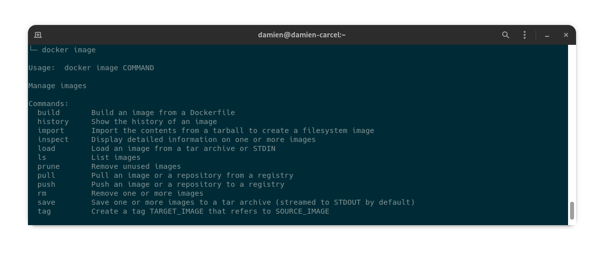
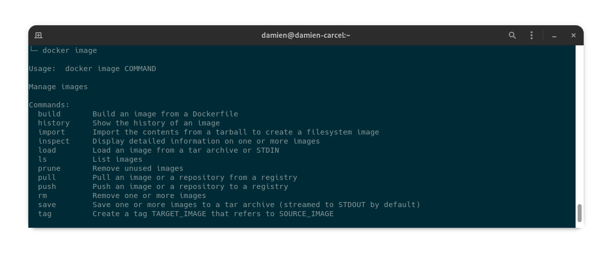

How to put an elephant
in a container
-
Developing in PHP with Docker
About me

Damien Carcel
Software Lead at Akeneo
The problem
The problem
The solution
What is Docker

Docker is not a VM

Docker images

Let's build
Let's go further with our own image
Docker Compose for the win
A few tips to finish
A few tips to finish
A few tips to finish
Explore
 
